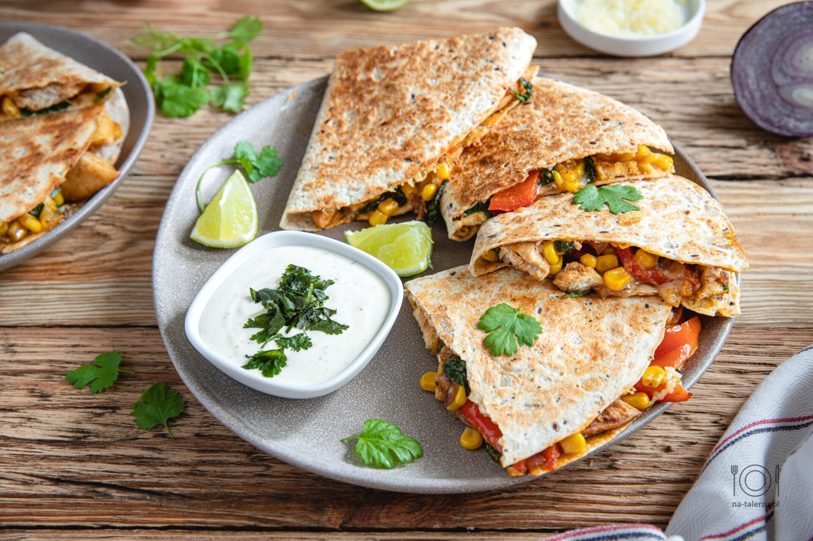

Home
Quesadilla

Quesadilla Recipe
A quesadilla is a Mexican dish made with a tortilla,
typically filled with cheese and other ingredients like meats or vegetables,
then folded and cooked until crispy and melted inside.
It's a versatile, flavorful snack or meal that's easy to customize to your taste!
ingredients
- Tortillas: (flour or corn) 2 large (each about 50-60 g, total ~120 g)
- Cheese: 50 g, shredded (cheddar, mozzarella, or a mix)
- Cooked Chicken: 60 g, shredded or diced
- Bell Peppers: 30 g, diced
- Onion: 20 g, diced
- Corn: 20 g (canned or fresh)
- Jalapeños: 10 g (about 3-4 thin slices, adjust to taste)
- Butter or Oil: 5 g (for cooking)